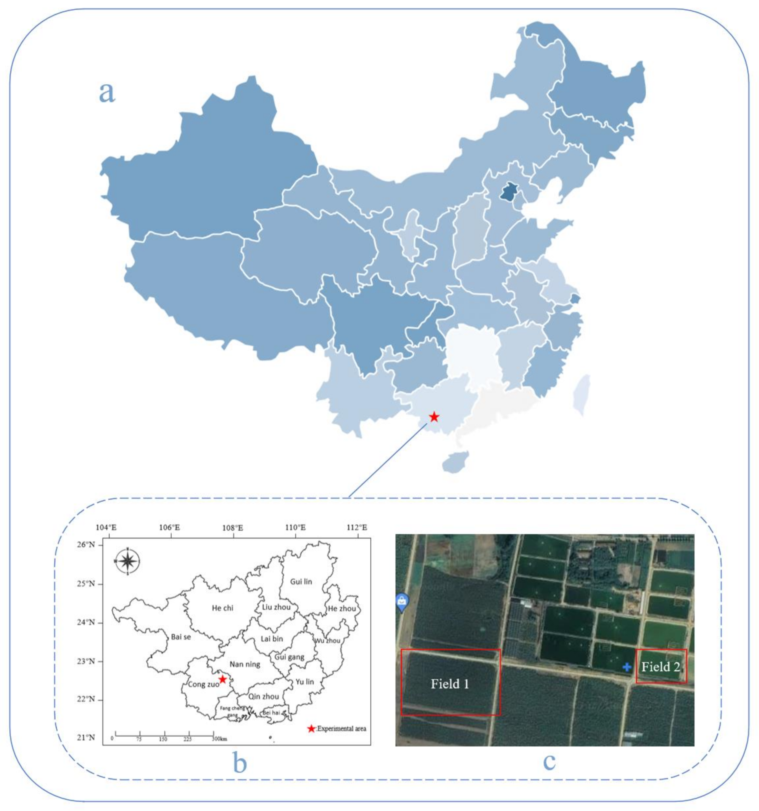
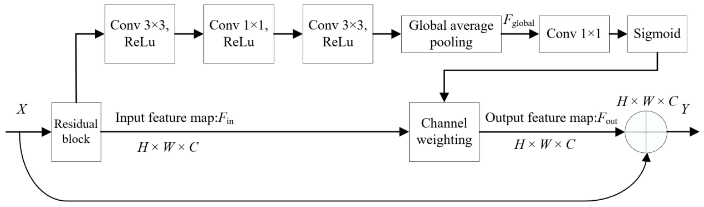
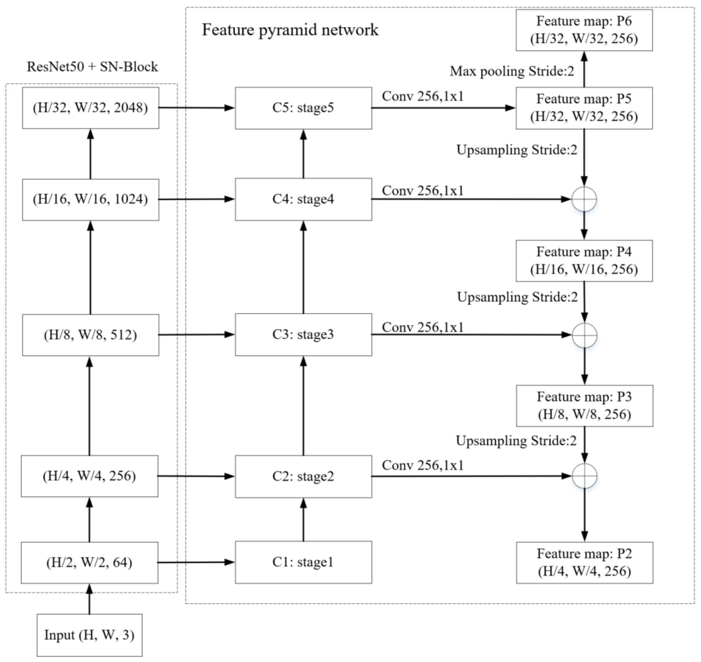
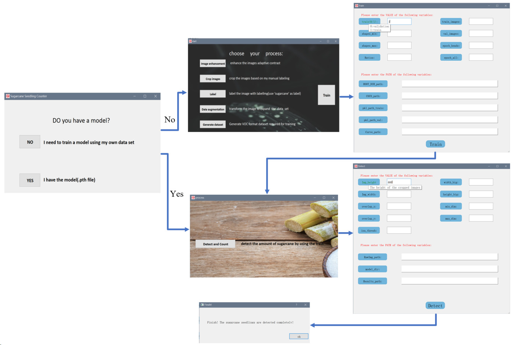
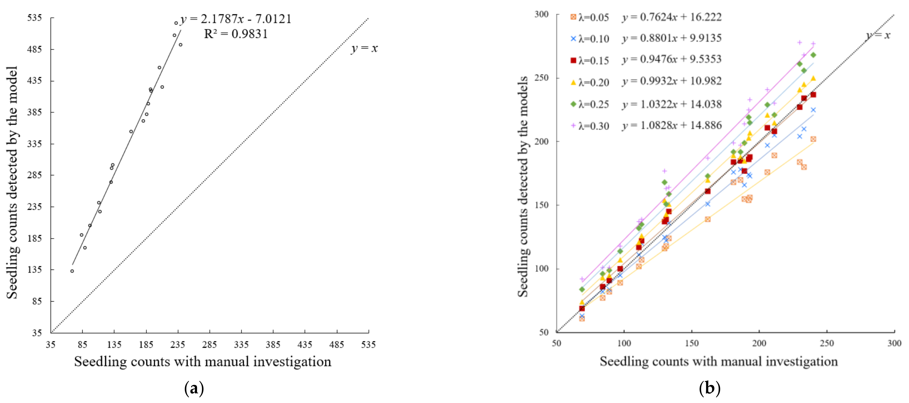
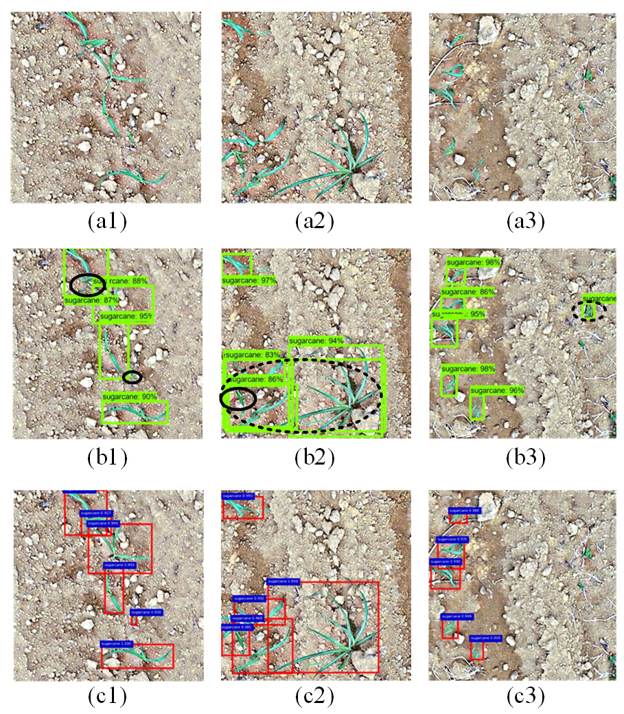
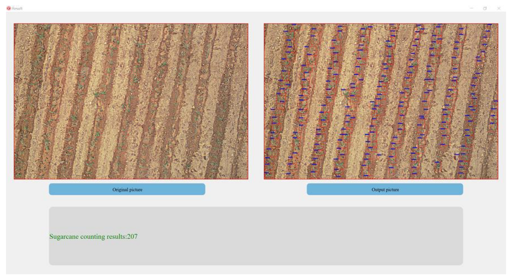

Remote Sensing 2022
田间甘蔗幼苗的
识别与计数
Identification and Counting of Sugarcane Seedlings
in the Field Using Improved Faster R-CNN
目标检测
Faster R-CNN
精准农业
无人机航拍
Yuyun Pan, Nengzhi Zhu, Lu Ding, Xiuhua Li*, Hui-Hwang Goh, Chao Han, Muqing Zhang
Guangxi University | Remote Sens. 2022, 14, 5846
摘要
研究概要
核心贡献：基于改进 Faster R-CNN 的甘蔗幼苗自动检测与计数方法 (SGN-D)
- 甘蔗出苗对糖业生产至关重要，人工计数耗时且难以大规模实施
- 利用无人机 (UAV) 航拍获取高分辨率图像，结合深度学习自动检测
- 提出 SGN-D 模型：ResNet50 + SN-block 注意力 + FPN 多尺度融合 + 锚框优化
- 检测平均精度 AP = 93.67%，优于原始 Faster R-CNN、SSD、YOLO
- 设计幼苗去重算法，计数精度达 CA = 96.83%（IoU=0.15 时）
- 开发 PyQt5 自动识别与计数软件系统
01 / 引言
研究背景与动机
产业需求
甘蔗是中国重要糖料作物，广西占全国60%以上产量；出苗率直接决定产量
传统方法局限
人工采样统计耗时耗力，难以覆盖大面积种植区，存在统计偏差
技术契机
UAV航拍快速获取高分辨率图像，深度学习使自动检测计数成为可能
核心挑战
甘蔗幼苗与杂草外观相似、叶片相互遮挡、目标尺寸小，检测难度大
"Unlike banana, maize, cotton seedlings whose appearance is reasonably regular, sugarcane seedlings resemble weeds and are difficult to detect."
01 / 引言
本文主要贡献
1
改进 Faster R-CNN
ResNet50 + SN-block + FPN + 锚框优化，提升幼苗检测精度
2
去重算法
基于图像裁剪重叠 + NMS 的幼苗去重，消除子图拼接时重复计数
3
软件系统
PyQt5 开发 GUI，支持模型训练与推理，实现端到端自动计数
检测 AP 93.67% | 计数精度 96.83% | MAE 4.60（IoU=0.15）
02 / 相关工作
幼苗检测方法演进
传统方法
- 颜色/纹理/形状分割：玉米出苗 96.68%（AP-HI）
- 链码骨架优化：小麦计数 89.98%
- 形态回归模型：油菜 R2=0.846
- 缺点：噪声敏感、鲁棒性差
深度学习方法
- SSD-MobileNet V2：棉花 79%
- CenterNet ResNet50：棉花 88%
- YOLOv3：棉花幼苗分离计数
- Faster R-CNN：香蕉 97%、棉花 R2=0.95
- EfficientDet-D1：水稻 F1=0.77
Faster R-CNN 的两阶段架构在幼苗检测中表现优异，但需针对甘蔗幼苗特性进一步改进。
03 / 实验数据
实验场地与数据采集
实验蔗田
- 地点：广西崇左市扶绥县（22.5°N, 107.8°E）
- 广西是中国最大的甘蔗和食糖产区
- 亚热带季风气候，年均温 22.3°C
- 两个蔗田区域（Field 1 和 Field 2），土壤颜色和光照强度有差异
UAV 采集平台
- DJI Phantom 4 Pro V2.0 无人机
- 飞行高度 3m，地面分辨率 0.8 cm/pixel
- 共采集 238 张甘蔗幼苗航拍图像

Fig.1 实验蔗田地理位置信息
04 / 方法
整体流程框架
实验整体流程包含三大模块：
数据集准备
图像增强(CLAHE) → 图像裁剪 → 数据增强 → 甘蔗幼苗标注
检测模型构建
改进 Faster R-CNN(ResNet50+SN-block+FPN+锚框优化) 训练与验证
去重计数
子图检测结果拼接回原图 → NMS 去重 → 统计幼苗数量
04 / 方法
数据预处理
1
CLAHE 增强
对比度受限自适应直方图均衡化，增强植物与背景对比度，抑制噪声
2
图像裁剪
238张原图裁剪为 600×600 子图，水平重叠32.3%、垂直重叠36.5%
3
数据增强
翻转+旋转，训练集 14,352 张，验证集 2,388 张，共 16,740 张 (SC 数据集)
4
LabelImg 标注
使用 LabelImg 工具进行幼苗边界框标注
SC 数据集：2,790 张含幼苗子图 → 数据增强后 16,740 张（2392 训练 + 398 验证 → 扩充 6×）
04 / 方法
改进 Faster R-CNN 检测算法
四个核心改进模块：
ResNet50 骨干网络
替代原始 VGG16，残差结构解决梯度消失，提取更高分辨率特征
SN-block 注意力
轻量级通道注意力模块，增强幼苗特征通道、抑制干扰通道
FPN 多尺度融合
自顶向下 + 横向连接，融合多层语义与定位信息，提升小目标检测
锚框优化
统计幼苗标注框宽高比，替换为 [1:1, 2:1, 4:5, 1:2]，尺寸 [16,32,64,128,256]
完整模型命名：SGN-D (Sugarcane-Detector)
04 / 方法
ResNet50 特征提取 & SN-block 注意力
ResNet50 骨干网络
- 5 个阶段 (Conv Block + Identity Block)
- 残差连接解决网络退化问题
- 特征图 C1~C5 尺寸：320×64 → 20×2048
- 相比 VGG16，更适合小目标特征提取
SN-block 通道注意力
- 卷积 + 全局平均池化 → 全局特征向量 Fglobal
- 1×1 卷积计算通道权重 + Sigmoid 归一化
- 输出 Fout = Hc(Fin) ⊗ Fin
- 增强重要特征通道、抑制次要通道

Fig.6 SN-Block 结构图
04 / 方法
FPN 多尺度融合 & RPN 锚框优化

Fig.7 特征金字塔网络(FPN)
FPN 多尺度特征融合
- 自底向上：骨干网络逐层提取特征
- 自顶向下：高层特征上采样，与低层对齐
- 横向连接：1×1 卷积统一通道后逐元素相加
- 高层语义利于分类，低层高分辨率利于定位
- 对小目标甘蔗幼苗检测精度提升显著
RPN 锚框优化
- 原始：3 种宽高比 (1:2, 1:1, 2:1)
- 优化后：4 种宽高比 (1:1, 2:1, 4:5, 1:2)
- 锚框尺寸：(16, 32, 64, 128, 256)
- 基于训练集幼苗标注框统计学特性定制
04 / 方法
去重算法与软件系统
拼接去重算法
- 子图检测结果坐标变换回原图位置
- 设置 IoU 阈值 λ，NMS 去除重叠检测框
- 保留置信度最高的检测框
- 消除因图像裁剪重叠导致的重复计数
λ 值选取：0.05 ~ 0.30，最优 λ = 0.15
软件系统
- 基于 PyQt5 框架开发 GUI
- 支持用户自训练模型或使用预训练模型
- 输入航拍图像 → 自动检测 → 输出计数结果
- 直观展示原图与检测对比

05 / 实验结果
消融实验 — 各改进模块贡献
逐步添加改进模块的检测效果对比：
| 方法 | 锚框数 | AP (%) | AR (%) |
| Original Faster R-CNN | 9 | 84.98 | 83.56 |
| + 锚框优化 | 20 | 86.58 | 84.91 |
| + ResNet50 | 20 | 89.88 | 87.22 |
| + SN-block | 20 | 90.59 | 87.65 |
| + FPN (SGN-D) | 20 | 93.67 | 89.78 |
各模块提升
- 锚框优化：AP +1.6%, AR +1.35%
- ResNet50 替换 VGG16：AP +3.3%
- SN-block 注意力：AP +0.71%
- FPN 多尺度融合：AP +3.08%
关键发现
- FPN 对精度提升最大（+3.08%）
- ResNet50 替换 VGG16 贡献第二（+3.3%）
- 各改进模块效果可叠加
05 / 实验结果
与其他检测模型对比
| 模型 | AP (%) | AR (%) |
| YOLO v2 | 79.75 | 76.84 |
| YOLO v3 | 82.46 | 80.33 |
| SSD | 77.50 | 74.21 |
| Faster R-CNN (原始) | 84.98 | 83.56 |
| Improved Faster R-CNN (SGN-D) | 93.67 | 89.78 |
+8.69%
vs 原始 Faster R-CNN
改进 Faster R-CNN 在甘蔗幼苗检测中显著优于所有对比方法，且对不同光照、遮挡和杂草密度条件具有鲁棒性
05 / 实验结果
IoU 阈值对检测性能的影响
去重算法中 IoU 阈值 λ 的选取对大图检测精度有显著影响：
| IoU 阈值 λ | Precision (%) | Recall (%) | F1-score (%) |
| 0.05 | 95.32 | 86.93 | 90.93 |
| 0.10 | 93.14 | 92.76 | 92.95 |
| 0.15 | 92.70 | 94.65 | 93.66 |
| 0.20 | 91.34 | 95.20 | 93.23 |
| 0.25 | 89.93 | 96.24 | 92.98 |
| 0.30 | 88.02 | 96.66 | 92.14 |
λ 过小 (<0.1)
重叠检测框被过度去除，导致漏检增多，Recall 下降
λ 过大 (>0.2)
过多重叠框被保留，误检增多，Precision 下降
05 / 实验结果
幼苗计数性能分析
| λ | CA (%) | MAE | R2 |
| 0.05 | 87.63 | 21.55 | 0.9687 |
| 0.10 | 94.08 | 10.15 | 0.9824 |
| 0.15 | 96.83 | 4.60 | 0.9905 |
| 0.20 | 92.73 | 10.30 | 0.9880 |
| 0.25 | 86.75 | 19.15 | 0.9784 |
| 0.30 | 81.06 | 28.05 | 0.9746 |
λ=0.15 时最优：CA=96.83%, MAE=4.60, R2=0.9905

Fig.11 预测计数与人工计数相关性
05 / 实验结果
检测结果可视化

Fig.9 原始 vs 改进 Faster R-CNN 检测对比

Fig.10 软件系统计数结果展示（λ=0.15）
改进前（绿色框）
漏检小尺寸幼苗，误将杂草识别为幼苗
改进后（红色框）
检测到更小的幼苗，有效区分杂草与幼苗，漏检和误检均减少
06 / 总结与展望
研究结论
- 提出改进 Faster R-CNN 模型 SGN-D，检测 AP 达 93.67%，较原始网络提升 8.69%
- 四个改进模块（锚框优化、ResNet50、SN-block、FPN）均对精度有正向贡献
- SGN-D 优于 YOLO v2/v3、SSD 等主流单阶段检测器，提升至少 11.21%
- 设计基于 NMS 的拼接去重算法，λ=0.15 时计数精度达 96.83%
- 开发 PyQt5 软件系统，实现甘蔗幼苗端到端自动识别与计数
局限与展望
- 局限：幼苗与杂草的进一步区分仍有改进空间
- 展望：引入语义分割辅助区分、探索更多注意力机制、扩展到其他作物
该方法可为大规模田间甘蔗出苗率调查提供高效、准确的自动化解决方案
感谢聆听
Thank You
Identification and Counting of Sugarcane Seedlings
in the Field Using Improved Faster R-CNN
Remote Sensing 2022
Faster R-CNN
精准农业
doi.org/10.3390/rs14225846